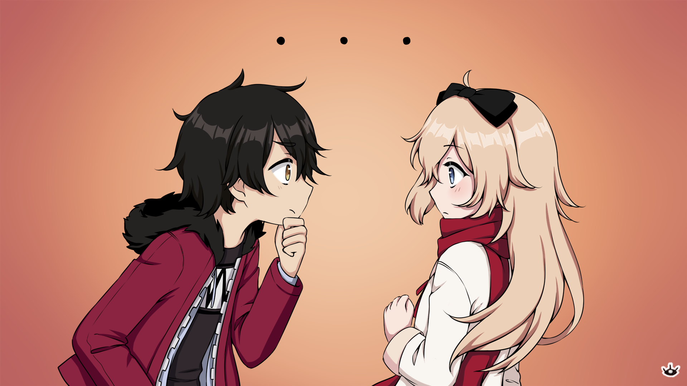
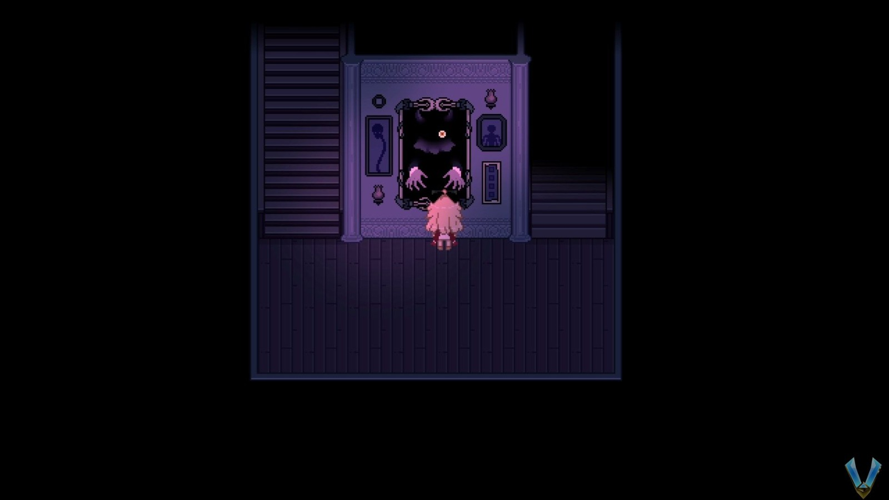
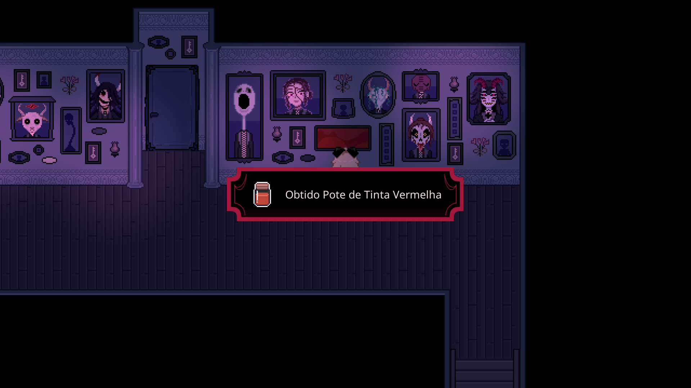
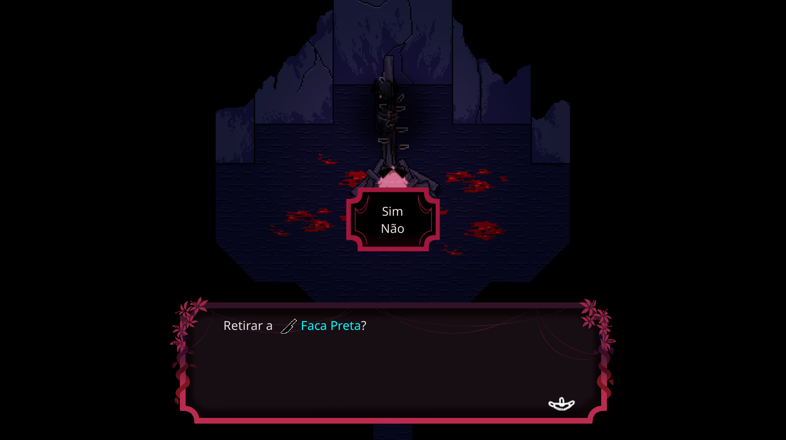

Explore a Casa
É isso. Ao entrarmos na casa, verifique os móveis se desejar, mas desça pelo corredor para desencadear uma cena.
Eventualmente, seremos interrompidos e acabaremos na sequência do sonho mais uma vez.
Bem, aqui vamos nós de novo. Ao sul ainda temos as escadas vermelhas. Ainda inacabado. No canto noroeste temos agora 3 portas. Digite o mais à direita para estar em uma sala de aula. Vá para o final aqui, onde temos toda a sala de aula começando a nos intimidar.
Quando possível, examine o pássaro morto e a classe quer que comamos o pássaro. Interaja com o pássaro novamente e escolha Não faça. Depois, interaja com a ave novamente para uma nova opção, pegue a ____. Escolha esta opção para obter uma faca. NÃO se esfaqueie. Em vez disso, use esta faca para esfaquear uma das crianças. Depois, um guarda-roupa aparecerá. Use-o para sair daqui.
Estamos de volta à "realidade" e em uma sala de gaiola. Sai está enjaulado mas estamos fora por algum motivo. Depois da pequena conversa, vá em frente e salve seu jogo. Este lugar não é necessariamente longo, mas há muitas cenas e lore.
Por enquanto fale com Sai até que ele não tenha nada de novo a dizer, depois saia da sala. Estamos no corredor do porão. A partir desta sala, vá primeiro para a esquerda para um garfo. Ao norte está uma porta que está atualmente trancada, então siga para o sul para a sala ao lado, a Biblioteca. Não há muito aqui para nós agora. Você pode verificar as estantes à direita da entrada para alguns livros que você pode ler.
Se essa não for a sua xícara de chá, suba as escadas para encontrar um quarto trancado. À direita, porém, há uma lâmpada acesa. Confira para encontrar o globo ocular.
Volte para o corredor e vá agora mesmo para encontrar uma escada. Isso leva de volta ao primeiro andar. No seu caminho, porém, você verá uma pintura muito assustadora na parede com as mãos. Lembra daquele globo ocular que acabamos de pegar? Vá em frente e use-o na frente da pintura para colocá-lo lá... não me pergunte como. Vamos precisar encontrar outro.
Vá para o primeiro andar agora e uma cena se desenrolará onde conhecemos um amigo, o Spider. Depois da cena, estaremos de volta onde está a pintura preta. Volte para cima para ver que o pote onde o Spider que agora está quebrado.
Neste momento estamos perto da entrada. Existem 2 portas para o sul. Estes levam à sala onde Sai e Lacie acenderam o fogo. Dirija-se lá e vá para o lado sul da sala, onde você encontrará 4 plantas. Cada um deles lhe pedirá algo:
Álcool
Música
Coroa de Flores
Alimento
Este é realmente bastante simples. Confira na imagem abaixo a localização da coroa de flores, álcool e música
Com esses três resolvidos, volte para fora e agora note que há um corredor diretamente à sua frente e à esquerda estão mais 2 portas voltadas para o norte. Mais à esquerda está a entrada.
Comece entrando pela porta mais à esquerda para encontrar o banheiro. Verifique o banheiro para encontrar e tirar o que você encontrar para obter a chave.
De volta ao corredor, entre na porta ao lado à direita para encontrar a cozinha. Suba a escada para verificar o caldeirão e encontrar algo preto. Você terá que mexer primeiro. Esta é a quarta bênção. Infelizmente você não pode levá-la com você ainda.
Por enquanto, confira as prateleiras na parte de trás. Verifique o frasco para encontrar o globo ocular e o sapo que vai servir para a planta.

Puxe a caixa no canto para fora do caminho e verifique a tampa circular de madeira na parede para encontrar a Chave Pequena.

Agora que você fez todas as 4 plantas, você terá outra planta aberta e soltará a Lock Pick no chão.
E com isso volte para Sai e use o Lock Pick ou a Chave Pequena para tirá-lo da gaiola. Não importa qual você usa. Seja qual for a sua escolha, Sai estará fora da gaiola e de volta conosco.
E com o Sai no grupo, e com o Lock Pick, agora podemos abrir todas as portas que estavam fechadas. Por enquanto, saia da sala, vá para a esquerda e para o norte até o corredor. Lembra dessa porta sendo trancada? Peça ao Sai que use o Lock Pick e abra-o. Você terá que ganhar um minijogo, mas você já fez este várias vezes. Não há penalidade para perder, então vá em frente e faça o que quiser.
Comece verificando a coisa preta no canto do mapa. Pegue-o para obter o Objeto Preto. Esta é a terceira bênção.
Verifique a caixinha rosa na cômoda no canto inferior esquerdo para ver se ela está travada. O código para ela é:
018
o código é o número de pinturas nos corredores que são chaves contando o desenho da chave na caixa rosa
Abri-la nos renderá a chave.
É isso para esta sala. Volte para fora e siga para o sul para a Biblioteca mais uma vez. Suba as escadas aqui dentro e abra a porta usando a chave que acabamos de receber. Isso nos leva a um quarto com uma pequena piscina no meio. Spider e um corvo salva também estão aqui.
Vá em frente e salve seu jogo também e então há algumas coisas a fazer. Primeiro de tudo, pegue as três jarras de vidro do lado superior direito. Retire também o pano da praça ao lado de onde estavam os frascos para revelar que é algo preto. Esta é a segunda bênção.
Agora, fique na frente da água e use as três Jarras de vidro para obter tês Jarra com água. Use também o Objeto Preto que acabamos de receber do quarto da Senhorita Knives para obter Compressa Fria.
Volte para o corredor e diretamente na sua frente você verá uma pintura amarela horizontal. Se você tocá-lo, verá que a tinta grudará em seus dedos. Hmm. Use um pote de água para obter frasco de tinta amarela.
Dirija-se agora mesmo e você verá uma pintura semelhante, mas vermelha desta vez. Use outro pote de água para obter o frasco de tinta vermelha. Por fim, volte para o andar de cima e vá para o lado esquerdo do corredor para encontrar uma pintura azul. Novamente use um pote de água para obter frasco de tinta azul.
Siga um pouco para a direita no corredor e pegue o corredor norte para encontrar 2 portas. A porta norte é onde Senhiruta Knives está. Não podemos entrar neste lugar, então entre na sala à direita.
Aqui você verá a pintura de uma mulher. Antes de fazer qualquer coisa, verifique a gaiola na parte inferior da tela e pegue o Objeto Preto. Esta é a primeira bênção. Use-o do inventário para obter o Espelho de Mão.
Agora, aproxime-se da pintura e você tem a opção de puxar o globo ocular dela. Faça isso e ela começará a persegui-la. Estamos em um labirinto e teremos que pensar rápido para onde ir. É impossível saber logo de cara, mas eu consegui sempre tomava a esquerda. Isso me levou à saída. Você tem que ser rápido e nunca duvidar porque essa coisa é RÁPIDA!
Desça as escadas até onde está a pintura preta e use um dos globos oculares que conseguimos para que a pintura tenha os dois olhos. Isso vai tirar o personagem do caminho, permitindo que entremos na referida pintura.
Aqui você se levanta para encontrar um corpo queimado em uma estaca. Super assustador. Interaja com ele para obter a Faca Negra.
Volte para fora do quadro, suba as escadas e entre na cozinha. Use a Faca Preta no fundo do caldeirão para obter Pé Humano.
Volte até a sala da piscina onde o Spider está, aproxime-se do quadrado preto do lado direito e use qualquer uma das tintas que acabamos de receber. Isso transformará o quadrado preto em um caderno de rascunhos.
E, por fim, hora de usar a faca. Ao usá-lo do seu inventário, você será perguntado quem deve se cortar. Não acho que isso importe, mas eu pessoalmente deixei Sai fazer isso. Isso vai nos render faca.
E com isso você deve ter todos os itens necessários: Espelho de Mão, Caderno de Desenho, Compressa Fria, Pé Humano, Faca. Fale com o Spider e ele lhe dirá que agora é necessário que você precise queimar esses itens em uma determinada ordem. Ele não conta, mas é bem fácil.
Para saber o pedido, você praticamente o entendeu ao pegar os itens. Cada item foi numerado bênção. Sim, essa é a ordem. No entanto, para saber mais corretamente você pode usar esses 5 itens na frente da pintura aqui com as mãos para fora. Cada item que você colocar vai contar um pouco da história por trás de Senhorita Knives, mas deixe-me dizer-lhe que está realmente bagunçado. Ele não informa explicitamente a ordem, mas você pode encontrá-la seguindo a ordem abaixo.
Seja como for, abaixo está a ordem correta, caso você nem queira assistir ao passado da Senhorita Knives:
Espelho de mão
Caderno de desenho
Compressa Fria
Pé Humano
Faca
Estamos chegando ao fim, então vamos continuar! Vá em frente e salve seu jogo, saia da sala e volte para o primeiro andar. Aqui suba o corredor e lembra daquela sala onde estava a Senhorita Knives que antes estava trancada? Bem, podemos entrar agora!
Passe e siga pelo corredor para chegar a um corredor com pinturas na parede que têm um par de mãos, e todos os 5 itens que temos. Para isso aqui queremos interagir com cada pintura e colocá-las na ordem que precisamos para queimá-las. Mesma lista que a acima, mas vou colá-la novamente:
Espelho de mão
Caderno de desenho
Compressa Fria
Pé Humano
Faca
Depois de fazer isso, um incêndio aparecerá no último. Isso, por sua vez, fará aparecer um item no chão., pegue-o.

Estamos AGORA prontos para o fim. No entanto, há um pouco de algo a fazer primeiro. Para começar, volte para a sala da piscina e converse com o Spider. Ele mencionará que você é muito fraca e ele tem algo para você em seu esconderijo anterior. Esta é uma daquelas poções arco-íris que aumentam a sua saúde. Agora, vá em frente e salve seu jogo porque temos outro final aqui.
Aviso de Final
Para este final, volte para a sala com a lareira e inicie o fogo.
Depois de fazer isso, você precisará queimar os itens na ordem ERRADA. A ordem correta está listada abaixo, então CERTIFIQUE-SE de fazê-lo de qualquer maneira que não seja esta:
Espelho de mão
Caderno de desenho
Compressa Fria
Pé Humano
Faca
Uma vez que você fizer isso, aproveite a cena e estaremos em uma sala muito estranha. Siga para o norte daqui para encontrar Senhorita Knives. Aproxime-se dela para acionar o final.
Com este final fora do caminho, volte para o pote onde o Spider originalmente estava e interaja com ele para encontrar a poção temporária. Dirija-se à sala com a lareira e inicie-a, depois interaja com ela para obter uma lista dos itens que precisamos queimar.
Uma última vez, aqui está a lista na ordem correta. Certifique-se de fazê-lo na ordem correta, caso contrário, você terá o final ruim acima.
Espelho de mão
Caderno de desenho
Compressa Fria
Pé Humano
Faca
Depois de fazer isso, aproveite as cenas e logo depois teremos a luta contra Senhorita Knives. Esta é uma luta bastante longa e dividida em várias fases, então vamos te dar um rápido resumo de cada uma:
Nota do autor
Durante cada fase você terá saúde. Você sempre tem 1, mas lembre-se que recebemos uma Poção Arco-íris da garota das sombras que a aumentou para 2. Também ganhamos uma Poção Temp do Spider então aumentará para 3. Dito isso, se você morrer em qualquer uma das fases, você começa no início dessa fase (e não no início). Então antes de qualquer coisa, espero que tenha tomado todas as poções.